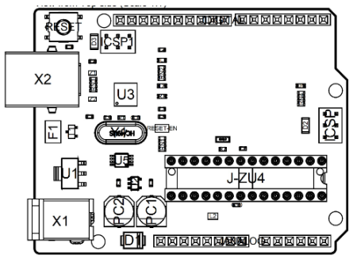
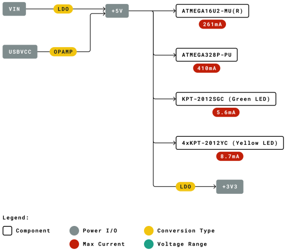
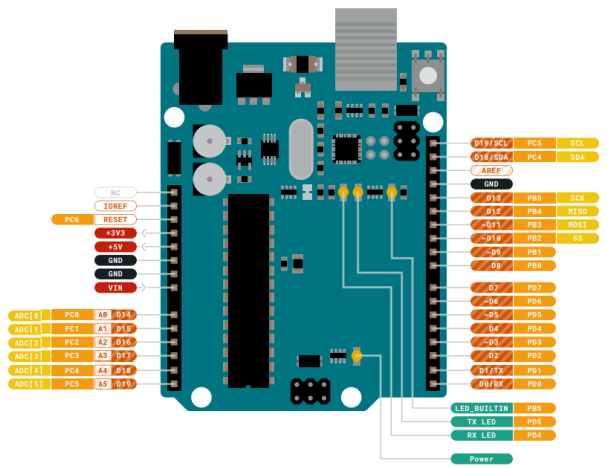

The Arduino UNO R3 is the perfect board to get familiar with electronics and coding. This versatile microcontroller is equipped with the well-known ATmega328P and the ATMega 16U2 Processor. This board will give you a great first experience within the world of Arduino.
The Board
The UNO board is the flagship product of Arduino. Regardless if you are new to the world of electronics or will use the UNO as a tool for education purposes or industry-related tasks.
First entry to electronics: If this is your first project within coding and electronics, get started with our most used and documented board; Arduino UNO. It is equipped with the well-known ATmega328P processor, 14 digital input/output pins, 6 analog inputs, USB connections, ICSP header and reset button. This board includes everything you will need for a great first experience with Arduino.
Industry-standard development board: Using the Arduino UNO board in industries, there are a range of companies using the UNO board as the brain for their PLC's.
Education purposes: Although the UNO board has been with us for about ten years, it is still widely used for various education purposes and scientific projects. The board's high standard and top quality performance makes it a great resource to capture real time from sensors and to trigger complex laboratory equipment to mention a few examples.
Ratings
Recommended Operating Conditions
| Symbol | Description | Min | Max |
|---|---|---|---|
| Conservative thermal limits for the whole board: | -40 °C (-40°F) | 85 °C ( 185°F) |
-
NOTE: In extreme temperatures, EEPROM, voltage regulator, and the crystal oscillator, might not
work as expected due to the extreme temperature conditions
Power Consumption
| Symbol | Description | Min | Typ | Max | Unit |
|---|---|---|---|---|---|
| VINMax | Maximum input voltage from VIN pad | 6 | - | 20 | V |
| VUSBMax | Maximum input voltage from USB connector | - | 5.5 | V | |
| PMax | Maximum Power Consumption | - | - | xx | mA |
Functional Overview
Board Topology
| Ref. | Description | Ref. | Description |
|---|---|---|---|
| X1 | Power jack 2.1x5.5mm | U1 | SPX1117M3-L-5 Regulator |
| X2 | USB B Connector | U3 | ATMEGA16U2 Module |
| PC1 | EEE-1EA470WP 25V SMD Capacitor | U5 | LMV358LIST-A.9 IC |
| PC2 | EEE-1EA470WP 25V SMD Capacitor | F1 | Chip Capacitor, High Density |
| D1 | CGRA4007-G Rectifier | ICSP | Pin header connector (through hole 6) |
| J-ZU4 | ATMEGA328P Module | ISCP 1 | Pin header connector (through hole 6) |
| Y1 | ECS-160-20-4X-DU Oscillator |
Processor
The Main Processor is a ATmega328P running at up tp 20 MHz. Most of its pins are connected to the external headers, however some are reserved for internal communication with the USB Bridge coprocessor.
Power Tree
Board Operation
Getting Started - IDE
If you want to program your Arduino UNO while offline you need to install the Arduino Desktop IDE [1] To connect the Arduino UNO to your computer, you’ll need a Micro-B USB cable. This also provides power to the board, as indicated by the LED.
Getting Started - Arduino Web Editor
All Arduino boards, including this one, work out-of-the-box on the Arduino Web Editor [2], by just installing a simple plugin.
The Arduino Web Editor is hosted online, therefore it will always be up-to-date with the latest features and support for all boards. Follow [3] to start coding on the browser and upload your sketches onto your board.
Getting Started - Arduino IoT Cloud
All Arduino IoT enabled products are supported on Arduino IoT Cloud which allows you to Log, graph and analyze sensor data, trigger events, and automate your home or business.
Sample Sketches
Sample sketches for the Arduino XXX can be found either in the “Examples” menu in the Arduino IDE or in the “Documentation” section of the Arduino Pro website [4].
Online Resources
Now that you have gone through the basics of what you can do with the board you can explore the endless possibilities it provides by checking exciting projects on ProjectHub [5], the Arduino Library Reference [6] and the online store [7] where you will be able to complement your board with sensors, actuators and more.
Board Recovery
All Arduino boards have a built-in bootloader which allows flashing the board via USB. In case a sketch locks up the processor and the board is not reachable anymore via USB it is possible to enter bootloader mode by doubletapping the reset button right after power up.
Connector Pinouts
Analog
| Pin | Function | Type | Description |
|---|---|---|---|
| 1 | NC | NC | Not connected |
| 2 | IOREF | IOREF | Reference for digital logic V - connected to 5V |
| 3 | Reset | Reset | Reset |
| 4 | +3V3 | Power | +3V3 Power Rail |
| 5 | +5V | Power | +5V Power Rail |
| 6 | GND | Power | Ground |
| 7 | GND | Power | Ground |
| 8 | VIN | Power | Voltage Input |
| 9 | A0 | Analog/GPIO | Analog input 0 /GPIO |
| 10 | A1 | Analog/GPIO | Analog input 1 /GPIO |
| 11 | A2 | Analog/GPIO | Analog input 2 /GPIO |
| 12 | A3 | Analog/GPIO | Analog input 3 /GPIO |
| 13 | A4/SDA | Analog input/I2C | Analog input 4/I2C Data line |
| 14 | A5/SCL | Analog input/I2C | Analog input 5/I2C Clock line |
Digital
| Pin | Function | Type | Description |
|---|---|---|---|
| 1 | D0 | Digital/GPIO | Digital pin 0/GPIO |
| 2 | D1 | Digital/GPIO | Digital pin 1/GPIO |
| 3 | D2 | Digital/GPIO | Digital pin 2/GPIO |
| 4 | D3 | Digital/GPIO | Digital pin 3/GPIO |
| 5 | D4 | Digital/GPIO | Digital pin 4/GPIO |
| 6 | D5 | Digital/GPIO | Digital pin 5/GPIO |
| 7 | D6 | Digital/GPIO | Digital pin 6/GPIO |
| 8 | D7 | Digital/GPIO | Digital pin 7/GPIO |
| 9 | D8 | Digital/GPIO | Digital pin 8/GPIO |
| 10 | D9 | Digital/GPIO | Digital pin 9/GPIO |
| 11 | SS | Digital | SPI Chip Select |
| 12 | MOSI | Digital | SPI1 Main Out Secondary In |
| 13 | MISO | Digital | SPI Main In Secondary Out |
| 14 | SCK | Digital | SPI serial clock output |
| 15 | GND | Power | Ground |
| 16 | AREF | Digital | Analog reference voltage |
| 17 | A4/SD4 | Digital | Analog input 4/I2C Data line (duplicated |
| 18 | A5/SD5 | Digital | Analog input 5/I2C Clock line (duplicated) |